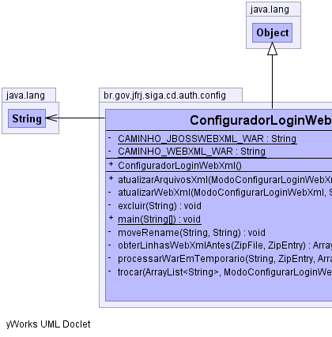
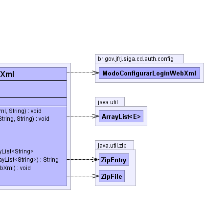

br.gov.jfrj.siga.cd.auth.config.ConfiguradorLoginWebXml
br.gov.jfrj.siga.cd.auth.config.ConfiguradorLoginWebXml
|
|||||||||
| PREV CLASS NEXT CLASS | FRAMES NO FRAMES | ||||||||
| SUMMARY: NESTED | FIELD | CONSTR | METHOD | DETAIL: FIELD | CONSTR | METHOD | ||||||||
java.lang.Object
public class ConfiguradorLoginWebXml
Classe responsável por atualizar o arquivo web.xml de um arquivo war de forma a proporcionar a autenticação via certificado ou via formulário.
|  |  |
| Field Summary | |
|---|---|
private static java.lang.String |
CAMINHO_JBOSSWEBXML_WAR
|
private static java.lang.String |
CAMINHO_WEBXML_WAR
|
| Constructor Summary | |
|---|---|
ConfiguradorLoginWebXml()
|
|
| Method Summary | |
|---|---|
void |
atualizarArquivosXml(ModoConfigurarLoginWebXml modo,
java.lang.String caminhoWar)
Altera os arquivos necessários dentro do (.war) para o modo informado OBS: refatorar par aotimizar o código - faz toda operação para cada caminho dentro do war |
private void |
atualizarWebXml(ModoConfigurarLoginWebXml modo,
java.lang.String caminhoWar,
java.lang.String caminhoNoWar)
Atualiza o arquivo web.xml contido no war para usar certificado ou formulário. |
private void |
excluir(java.lang.String caminho)
Excluir um arquivo |
static void |
main(java.lang.String[] args)
|
private void |
moveRename(java.lang.String ori,
java.lang.String dest)
Renomeia (ou move) o arquivo de origem (ori) para o arquivo de destino (dest) |
private java.util.ArrayList<java.lang.String> |
obterLinhasWebXmlAntes(java.util.zip.ZipFile war,
java.util.zip.ZipEntry webXml)
Lê o arquivo web.xml do zip e armazena em um array de linhas |
private java.lang.String |
processarWarEmTemporario(java.lang.String caminhoWar,
java.util.zip.ZipEntry webXml,
java.util.ArrayList<java.lang.String> linhas)
Processa o war em arquivo temporário substituindo as linhas do web.xml pelas linhas (parâmetro) e retornando o nome do arquivo temporário gerado. |
private void |
trocar(java.util.ArrayList<java.lang.String> linhas,
ModoConfigurarLoginWebXml modo)
troca as linhas de forma a que o arquivo passe a refletir o modo solicitado |
| Methods inherited from class java.lang.Object |
|---|
clone, equals, finalize, getClass, hashCode, notify, notifyAll, toString, wait, wait, wait |
| Field Detail |
|---|
private static java.lang.String CAMINHO_WEBXML_WAR
private static java.lang.String CAMINHO_JBOSSWEBXML_WAR
| Constructor Detail |
|---|
public ConfiguradorLoginWebXml()
| Method Detail |
|---|
public void atualizarArquivosXml(ModoConfigurarLoginWebXml modo,
java.lang.String caminhoWar)
throws java.io.IOException,
java.lang.InterruptedException
modo - se configura para formulario ou certificadocaminhoWar - caminho de origem do arquivo (.war)
java.io.IOException
java.lang.InterruptedException
private void atualizarWebXml(ModoConfigurarLoginWebXml modo,
java.lang.String caminhoWar,
java.lang.String caminhoNoWar)
throws java.io.IOException,
java.lang.InterruptedException
modo - se configura para formulario ou certificadocaminhoWar - caminho de origem do arquivo (.war)caminhoNoWar - o caminho do arquivo no war
java.io.IOException
java.lang.InterruptedException
private java.lang.String processarWarEmTemporario(java.lang.String caminhoWar,
java.util.zip.ZipEntry webXml,
java.util.ArrayList<java.lang.String> linhas)
throws java.lang.InterruptedException
caminhoWar - caminho completo do arquivo war de origemwebXml - A entrada referente ao arquivo web.xmllinhas -
java.lang.InterruptedException
private void moveRename(java.lang.String ori,
java.lang.String dest)
ori - caminho completo do arquivo de origemdest - caminho completo do arquivo de destino
java.lang.InterruptedException
private void excluir(java.lang.String caminho)
throws java.lang.InterruptedException
nome -
java.lang.InterruptedException
private void trocar(java.util.ArrayList<java.lang.String> linhas,
ModoConfigurarLoginWebXml modo)
linhas - modo -
private java.util.ArrayList<java.lang.String> obterLinhasWebXmlAntes(java.util.zip.ZipFile war,
java.util.zip.ZipEntry webXml)
throws java.io.IOException
war -
java.io.IOException
public static void main(java.lang.String[] args)
throws java.io.IOException,
java.lang.InterruptedException
java.io.IOException
java.lang.InterruptedException
|
|||||||||
| PREV CLASS NEXT CLASS | FRAMES NO FRAMES | ||||||||
| SUMMARY: NESTED | FIELD | CONSTR | METHOD | DETAIL: FIELD | CONSTR | METHOD | ||||||||